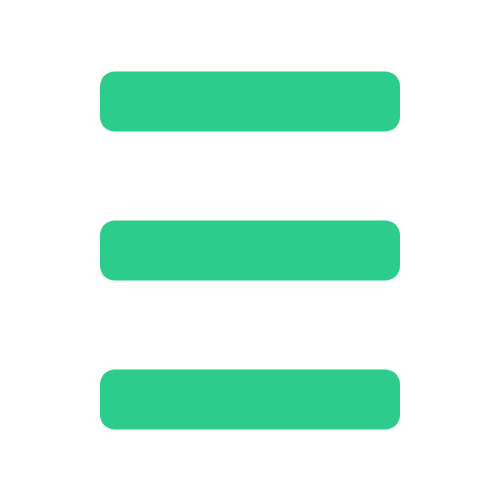
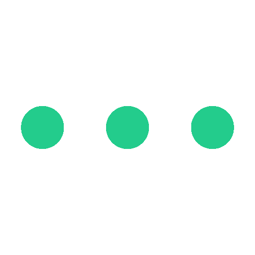

×
길찾기
마커 선택
즐겨찾기
전화/문자
 더보기
×
키워드
:
검색하기
경유지
길찾기
내위치를 출발지로
내위치를 도착지로
출발지 :
도착지 :
기존 경로 시간, 거리 안내
추가 경로 시간, 거리 안내
×
지도에서 보고싶은
안전시설물을 선택하세요!
CCTV
비상벨
경찰서
소방서
응급실
가로등
편의점
24시간 영업 가게
×
즐겨찾기
저장하기
불러오기
저장된 경로 정보
출발지 :
도착지 :
×
비상전화
비상문자
문자내용
안심귀가 서비스 비상문자입니다
×
안심하길
데이터 정보 ▼
CCTV
비상벨
경찰서
소방서
응급실
가로등
개발팀 ▼
박홍정
윤정하
조현석
주시형
좌표 값
X좌표 값
Y좌표 값
출발지
X 좌표
Y 좌표
도착지
X 좌표
Y 좌표
안심하길